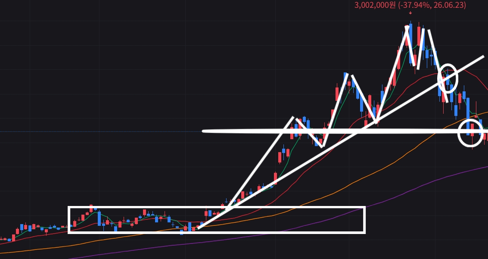
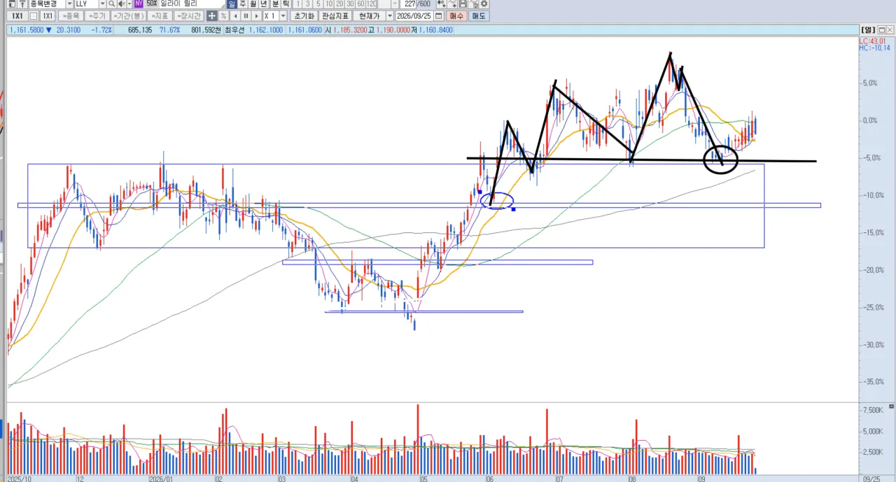
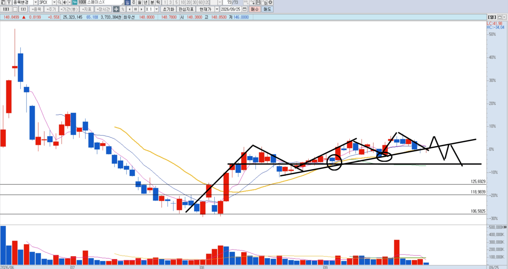

본문
개인적인 견해이니
참고안하셔도됩니다.
아래 지지층형성 ( 박스권 ) 이후
고점을 3번정도 돌파 하고
세번째 고점을 넘기지못한 상태에서
상승추세를 깨버리며
아래 두번째파동의 저점구간을 이탈 or 터치 하는 차트의 모습이
저만의 고점판독 기법입니다.
별거 아닌것처럼 느끼실 수 있지만, 저는 이걸로 매도할수있는 기준을 만들었습니다.
예를들어

sk 하이닉스로 대조해봤을때
비슷한 모양새가 나옵니다.
여기서 중요한것은
대충 세번 고점돌파이후 빠지는게아니라
다시 고점을 트라이했는데 빠지는거를 중점으로봅니다.
트라이를 했는데 돌파를 살짞하거나 못한뒤에
빠지고 저점을 이탈시키면 그 유명한 쌍봉이나오는거죠
그 당시에는 잘 안보일수있긴한데
나중에보거나 좀 크게보면 그런양상이 자주보입니다.
여기서도 요점은
숏을 위에서 치는게아니라
고점트라이 이후 저점이깨질때 쳐야된다는겁니다.
이후 두번째 파동 저점을 깨거나 비비는구간이 오면 수익실현을 하고
또 저점이 깨지면 거기서 숏을 또 치는거죠
무릎에서 사서 어깨에 판다 이런말 많이 들어보셨을건데
숏도 똑같습니다.
어깨에서 숏쳐서 무릎에 나간다.
물론 모든종목에서 나오는 현상은 아니구요
특정 거래량이 유독 많거나
관심이 많이 쏠리는 종목들에서 자주 나오는현상입니다.
예를들자면
일라이릴리 같은 종목에서도 그런현상이 보입니다.
뭐 누군가는 끼워맞추기다. / 지나간 차트에서 그런걸봐서뭐하냐 그러실수도있는데
저는 이런걸 활용한다. 이런걸 써보고싶었습니다.
도움이되면 좋겠죠

그러면 한번 지켜보시겠어요?
지금 스페이스x에서도 그런 움직임이 보입니다.
과연 어떻게될지 궁금하네요
그럼이만.

글 쓰기어렵네ㅐ
플러스
샌디스크도 그런 양상인데
두번째 파동이 고점을 못넘긴거라 살짝 애매하긴한데
대충 넘겼다고 치고 봐야될듯요?
중요점은
고점을 넘기고 저점을 다시 올려주면 고점판독이 아닙니다.
상황에 따라 달라지는 느낌이라 생각하세요
하나더,
반대로하면 뭐가될까요~~~???
굿나잇
좋은 글 고마워요